1 Ant Group，Ling Team
2 中国人民大学高瓴人工智能学院
∗ 同等贡献（按姓名字母顺序列出）；† 在 Ant Group 实习期间完成贡献；‡ 通讯作者（按姓名字母顺序列出）。
学习率（LR）调度的近期进展表明，取消传统衰减阶段的无衰减方法，在保持有竞争力性能的同时具有有效性。模型合并技术已成为这一领域中特别有前景的解决方案。我们提出 Warmup-Stable and Merge（WSM），这是一个在学习率衰减与模型合并之间建立形式化联系的通用框架。WSM 提供统一的理论基础，将余弦衰减、线性衰减、inverse square root 衰减等多种衰减策略，模拟为有理论依据的模型平均方案，同时与不同优化方法完全兼容。通过大量实验，我们发现，合并时长——用于聚合 checkpoint 的训练窗口——是影响模型性能最关键的因素，其重要性超过 checkpoint 间隔和合并数量。在多个基准上，我们的框架始终优于广泛采用的 Warmup-Stable-Decay（WSD）方法，在 MATH 上提升 +3.5%、HumanEval 上提升 +2.9%、MMLU-Pro 上提升 +5.5%。这些性能优势也延伸至有监督微调场景，凸显 WSM 在长期模型完善方面的潜力。
日期：2025 年 7 月 20 日
通信地址：tianchangxin.tcx@antgroup.com，lingyao.zzq@antgroup.com
wangjp1010@ruc.edu.cn，batmanfly@gmail.com
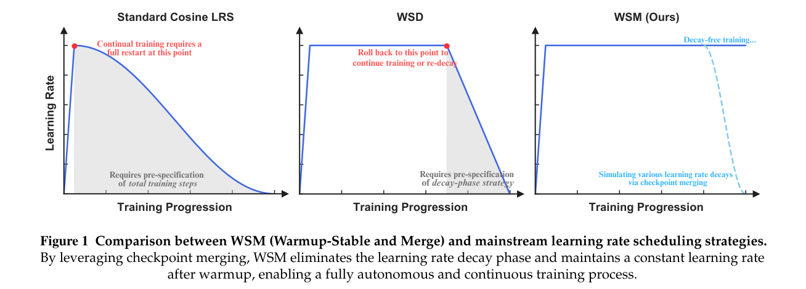
在大语言模型（LLM）预训练中，学习率（LR）调度起着关键作用，对训练稳定性、收敛速度和最终模型性能具有重要影响（Jin et al., 2023; Gotmare et al., 2019）。传统 LR 调度根据训练进度动态调整 LR，其中余弦衰减调度已成为广泛采用的方法（Kaplan et al., 2020; Hoffmann et al., 2022）。该方法先进行初始 warmup，再进行基于余弦的衰减，两者均受预先确定的总训练时长约束。因此，训练过程的任何延长，例如加入新数据，都需要从头完整重启，以重新校准整条衰减曲线。
为解决这种不灵活性，Warmup-Stable-Decay（WSD）策略（Hu et al., 2024）在 warmup 与衰减阶段之间插入恒定 LR 的稳定训练阶段。该调度提供两个主要优势：(1) 可以不依赖总步数，灵活启动衰减阶段；(2) 完全摆脱固定训练时长约束。WSD 方法已显示出显著有效性，DeepSeek-V3（DeepSeek-AI et al., 2024）和 ERNIE 4.5（ERNIE-Team, 2025）等近期 LLM 的采用便是证明。然而，WSD 引入新的调度要求：研究者必须手动决定何时开始衰减、为衰减分配多少 token，以及使用何种衰减函数（如余弦、线性）。此外，如果衰减已经开始后仍需延长训练，必须将训练回退到衰减前的状态，并重新设计衰减策略。对手动配置调度的依赖，与完全自主、持续训练的目标相悖。
为尽量降低调度复杂度，近期研究探索了从 LR 调度中彻底移除衰减阶段的替代方法（Defazio et al., 2024; Song et al., 2025; Zhang et al., 2025）。该领域的一个重要方向是权重平均（也称模型合并）技术。实验结果表明，只需保持恒定 LR，结合指数加权平均（EWA）等标准权重平均策略，即可获得与基于 WSD 的调度相媲美的性能（Li et al., 2025）。沿着这一研究方向，我们作出三项关键扩展：
(1) 我们提出 Warmup-Stable and Merge（WSM），这是一个简单而通用的 LR 调度框架。通过形式化 LR 衰减与 checkpoint 合并之间的联系，我们证明 WSM 可以实例化，以模拟余弦衰减、线性衰减和inverse square root（1-sqrt）衰减等不同策略。我们的框架提供有理论依据的方法，将任何 LR 衰减方法转换为理论近似的模型平均实现。这不同于以往主要关注特定平均策略及其优化性质的工作（Defazio et al., 2024; Song et al., 2025; Li et al., 2025）。我们的框架不依赖具体优化器，可无缝集成不同优化算法（如 SGD、Adam），无需修改底层训练流水线。
(2) 通过大量实验，我们系统研究框架实例化中的关键因素，包括合并方法、合并频率、时长、粒度，以及合并与衰减策略的兼容性。我们发现，合并时长——被合并 checkpoint 覆盖的训练时期——是影响模型性能最关键的因素，其影响显著大于 checkpoint 间隔和被合并模型的数量。
(3) 所提出的无衰减 LR 调度带来显著性能收益。大量实（接下页）
（续上页）证评估表明，在多个基准上始终获得提升：MATH +3.5%、HumanEval +2.9%、MMLU-Pro +5.5%，相较 WSD 方法实现显著进步，而以往工作通常只能达到与 WSD 相当的性能。此外，这些收益自然延伸到后训练阶段，表明我们的方法有潜力在长期模型完善过程中持续带来改进。
所提出的 WSM 框架，为开发有效的无衰减 LR 调度提供了一个有前景的方向。结果显示，在预训练和微调阶段均能取得一致的性能优势。WSM 通过简单、稳定的优化方法，实现复杂的类似衰减方法，将策略性调度的优势与稳健训练动态结合起来。
现有主流 LR 调度器通常包含两个阶段：初始 warmup，随后衰减。在 warmup 阶段，LR 在 \(T_{\mathrm{warmup}}\) 步内，从较小值线性增加至峰值 \(\mathrm{lr}_{\mathrm{peak}}\)，以稳定训练早期的优化过程。warmup 之后，LR 根据预定义函数逐步降低，如余弦、线性或inverse square root 衰减。这些调度存在共同的关键局限：需要预先知道训练 token（或步数）总量 \(T_{\max}\)。例如，常用的余弦 LR 调度表示为：
Warmup-Stable-Decay（WSD）LR 调度在 warmup 与衰减之间加入稳定阶段，使 LR 保持在峰值 \(\mathrm{lr}_{\mathrm{peak}}\)，定义为：
由此可见，WSD 消除了稳定阶段手动调节 LR 的需要，并支持从该阶段终点发起多次衰减尝试，无需重置至初始状态。尽管有这种灵活性，它仍要求预定义衰减阶段设置，例如衰减开始步数 \(T_{\mathrm{decay\_start}}\)、衰减函数 \(\mathrm{decay\_function}\) 和总训练步数 \(T_{\max}\)。
本节首先建立 checkpoint 合并与 LR 衰减之间的理论联系，形式化所提出的 WSM（Warmup-Stable and Merge）调度，并将其与广泛使用的 WSD 调度比较。
本工作中 checkpoint 合并的核心思想，是取一个有序 checkpoint 列表 \([\theta_n,\theta_{n+1},\ldots,\theta_{n+k}]\)，应用合并函数，生成单一模型 \(\widehat{\theta}_{n+k}\)。这里，\(\theta_i\in\mathbb{R}^d\)（接下页）
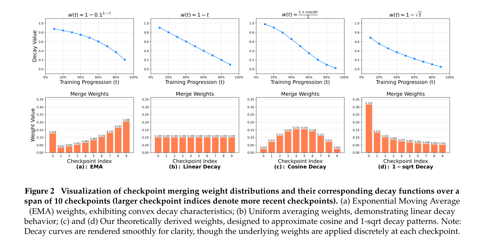
（续上页）表示模型在第 \(i\) 次训练迭代的参数向量。最一般的形式是对 checkpoint 加权平均：
其中，\(\{c_j\}\) 是和为 1 的非负权重，即 \(\sum_{j=0}^{k}c_j=1\)。
这一形式掩盖了与训练动态更深层的联系。我们可以将每个 checkpoint 表示为初始 checkpoint \(\theta_n\) 与随后 gradient 更新的组合，揭示这种联系。为简化分析，我们假设不同时刻 checkpoint 之间的更新相互独立，并忽略优化器状态。令 \(g_i\) 为第 \(i\) 步的 gradient 更新向量（包含 LR），模型更新为 \(\theta_{i+1}=\theta_i-g_i\)。因此，中间 checkpoint \(\theta_{n+j}\) 可表示为初始状态 \(\theta_n\)，加上随后一系列负 gradient 更新之和：
进一步，将式（2）代入一般合并公式（式 1），再交换求和顺序，重新排列双重求和。对于所有涉及且满足 \(j\ge i\) 的 checkpoint \(\theta_{n+j}\)，其求和中均包含 gradient 更新 \(g_{n+i-1}\)。
这表明，第 \(n+i-1\) 步的 gradient 更新 \(g_{n+i-1}\) 被施加了权重系数 \(\sum_{j=i}^{k}c_j\)。为 gradient 更新定义一组新权重 \(w_i=\sum_{j=i}^{k}c_j\) 后，可得（接下页）
（续上页）checkpoint 合并的最终等价表达式：
该等式表明，使用权重 \(c_j\) 合并 checkpoint，等价于对基准 checkpoint \(\theta_n\) 之后累积的 gradient 应用由权重 \(w_i\) 定义的合成衰减调度，其中合并权重 \(c_j\) 与有效学习率 \(w_i\) 之间存在映射。因此，我们提出定理 3.1，可用于近似单调递减的衰减曲线。图 2 展示不同 checkpoint 合并权重及其对应衰减曲线。更详细的证明见附录 B。
定理 3.1（由 gradient 衰减调度推导 checkpoint 权重）。给定期望的 gradient 衰减系数序列 \(\{w_i\}_{i=1}^{k}\)，其单调不增且有界，满足 \(1\ge w_1\ge w_2\ge\cdots\ge w_k\ge0\)，满足式（4）所需的相应非负 checkpoint 权重 \(\{c_j\}_{j=0}^{k}\) 由下式唯一确定：
WSM 的核心假设是：LR 衰减的优化收益可以与实时训练过程解耦，转而通过模型 checkpoint 合并有效实现（Kingma and Ba, 2015; DeepSeek-AI et al., 2024; Li et al., 2025）。WSM 完全移除衰减阶段，简化 LR 调度：
算法 1 详述 WSM 流水线，其主要包含两个阶段。首先是标准 warmup 阶段，学习率线性增加至峰值 \(\mathrm{lr}_{\mathrm{peak}}\)。随后进入主要的稳定训练阶段，学习率保持恒定。在指定步数 \(T_{\mathrm{switch}}\) 之后，模型可以从通用预训练数据 \(D\) 切换到规模较小的高质量退火数据集 \(D_{\mathrm{anneal}}\)。这使“退火”能够聚焦于经过精选的数据混合，符合实际预训练方法。整个稳定阶段会定期保存 checkpoint。同时，异步合并进程持续从存储中取出最后 \(n\) 个 checkpoint，合成为模型 \(W_{\mathrm{merged}}\)。具体而言，对于 \(\mathrm{Merge}(\cdot)\) 操作，我们可以选择所要模拟的不同衰减策略（如衰减曲线形状和最低 LR），计算对应 gradient 衰减系数 \(\{w_i\}\)，再依据定理 3.1 推导 checkpoint 合并权重 \(\{c_i\}\)。这一合并 checkpoint 模拟衰减调度的效果，提供稳健的退火后模型，而实时学习率始终不变。
输入：初始模型权重 \(W_0\)，预训练数据 \(D\)，高质量退火数据 \(D_{\mathrm{anneal}}\)（可选），峰值 LR \(\mathrm{lr}_{\mathrm{peak}}\)，warmup 步数 \(T_{\mathrm{warmup}}\)，切换步数 \(T_{\mathrm{switch}}\)，checkpoint 保存间隔 \(T_{\mathrm{cpt}}\)，合并窗口大小 \(n\)。
初始化：
▷ 合并后的 checkpoint。
W_merged ← null
▷ 用于保存基座（未合并）checkpoint 的存储。
C_storage ← []
▷ 阶段 1：在预训练数据上 warmup
for t = 1 to T_warmup do
lr(t) ← lr_peak · (t / T_warmup)
W_t ← Update(W_(t−1), D, lr(t))
end for
▷ 阶段 2：稳定训练与合并
for t = T_warmup + 1 to ... do
lr(t) ← lr_peak
▷ 选择当前步使用的数据集
if t > T_switch and D_anneal is available then
D_current ← D_anneal
else
D_current ← D
end if
W_t ← Update(W_(t−1), D_current, lr(t))
if t (mod T_cpt) == 0 then
▷ 保存来自主训练过程的 checkpoint。
SaveToCheckpointStorage(C_storage, W_t)
▷ 异步更新合并后的 checkpoint
C_latest ← GetLastNCheckpoints(C_storage, n)
if len(C_latest) == n then
▷ 更新用于评估的合并 checkpoint。
W_merged ← Merge(C_latest)
end if
end if
end for
return C_storage 中存储的基座 checkpoint 与合并后的 checkpoint W_merged。离线与在线合并的选择。首先，我们采用基于 checkpoint 的离线方法，作为强大的探索框架，在不影响主要训练运行的前提下，发现最优退火策略。通过保留所有离散 checkpoint 的历史记录，实践者可以系统评估不同因素如何影响最终模型，包括合并算法选择（模拟线性或余弦等不同衰减曲线），以及退火时长（通过改变合并窗口大小 \(n\)）。标准在线方法，例如指数移动平均（EMA），将单一退火路径硬编码进训练过程，无法完成这种多维度探索。关键在于，一旦离线探索识别出更好的固定策略（如“最后 4 个 checkpoint 的平均”），便可利用滑动窗口，将其落地为简单高效的在线过程。
实用性与复杂度。相较通过多次资源密集型训练来发现最优衰减调度，WSM 策略的合并操作节省大量（接下页）
（续上页）计算资源。引入的主要复杂度是存储开销。对于适合探索的离线合并方式，需要保存 checkpoint 历史，总数量等于总训练 token 数除以 checkpoint 保存间隔。不过，这种权衡可控，因为相关存储只占典型预训练预算的一小部分。此外，一旦确定更好的策略，或在存储极其受限的场景中，可以使用在线合并方式，仅维护固定大小为 \(n\) 的小 checkpoint 窗口，从而尽量减少存储占用。实验确认，较小窗口（如 \(n=12\)）已足以取得较强结果。
与 Li et al.（2025）的比较。我们注意到，同期工作 Li et al.（2025）研究了预训练中的模型合并。两项工作的差异如下：(1) 动机：我们将 checkpoint 合并视为新的 LR 调度机制，主要目标是找到优于 WSD 等强基线的调度；他们则将模型合并视为独立预训练技术，通过比较合并模型与合并前 checkpoint 的性能来评估价值。(2) 方法：我们的方法由理论驱动。首先建立 LR 衰减与 checkpoint 合并之间的形式化理论联系（第 3.1 节），再利用合并权重模拟不同衰减曲线。他们主要对合并算法进行实证研究，提出 WMA、SMA、EMA 等启发式方法。(3) 主要发现：通过大量实验，我们确定合并时长是影响最终模型性能最关键的超参数。最终，我们的方法超过经过 WSD 退火的基线性能（第 4.2 节）。相较之下，他们的结论是 checkpoint 合并可以有效达到退火模型的性能。我们的发现与 Li et al.（2025）互为补充，共同为 LLM 预训练中的 checkpoint 合并提供实践认识。
实验使用的模型是 Ling-mini，一个总参数 163 亿、激活参数 14 亿的标准 MoE 模型。Ling-mini 采用细粒度专家配置，包括 1 个稠密层和 19 个 MoE 层。每个 MoE 层包含 256 个专家，每个 token 激活其中 8 个专家，另加一个共享专家。我们使用 AdamW 优化器（Loshchilov and Hutter, 2019），超参数设为 \(\beta_1=0.9\)、\(\beta_2=0.95\)，并采用 0.1 的权重衰减。通过前期 scaling laws 实验，我们将峰值 LR 和 batch 大小分别设为 4.78e-4 和 2048。
我们从一个总计预训练 10.2 万亿 token 的 checkpoint 出发，其中包括以标准 4,096 长度序列训练的 10 万亿 token，以及 2000 亿长上下文 token，全部采用稳定的恒定 LR 训练。随后引入专门的高质量退火数据集，将训练分成两种不同策略，额外训练 400B token，以比较有效性：(1) 对模型应用传统 LR 衰减调度。该分支作为基线，代表标准 Warmup-Stable-Decay（WSD）方法。(2) 继续采用相同恒定 LR 训练，随后合并稳定阶段保存的 checkpoint，产生最终模型。该分支代表我们提出的 WSM 调度。除非另行说明，我们每 25B token 保存一个 checkpoint，采用均值平均来合并最新的 checkpoint。模型架构、具体训练参数、数据集组成和评估协议的完整细节见附录 A。
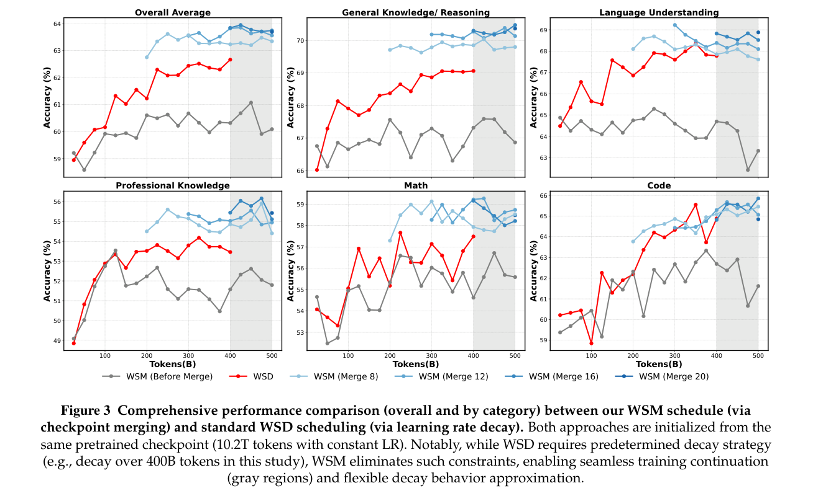
预训练期间的即时效果。本节全面比较所提出的 WSM 调度与基线 WSD 调度的性能。我们评估三组 checkpoint：(1) WSD 中使用标准 LR 衰减调度得到的 checkpoint；(2) WSM 最后稳定阶段中、合并之前的 checkpoint；(3) WSM 方法采用不同合并时长（窗口大小）得到的最终合并 checkpoint。各类别平均结果汇总于图 3 和表 1，各基准分数见附录 E。
首要且最重要的发现是：WSM 方法在所考察的大多数任务上始终优于 WSD。平均而言，WSM 在所有基准类别上均取得性能提升。比较两种策略各自最佳 checkpoint 时，WSM 比 WSD 平均高 1.3 分。我们观察到，MATH 最高提升 2.7 分、HumanEval 提升 2.4 分、MMLU-Pro 提升 2.1 分。这些结果提供有力证据：用 WSM 的 checkpoint 合并策略替代 WSD 的 LR 衰减阶段，不仅是可行替代方案，而且是增强最终预训练模型多方面能力的更有效方法。
对后训练的长期影响。WSM 在预训练阶段展现出有前景的结果，我们进一步研究其对后续后训练阶段的长期影响。在完全相同设置下，我们对 WSM 和 WSD 产生的 checkpoint 进行 5 个 epoch 的有监督微调。表 2 结果表明，这一优势在后训练阶段之后仍然保持。
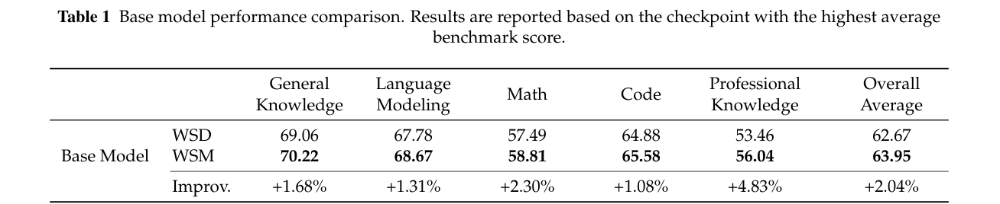
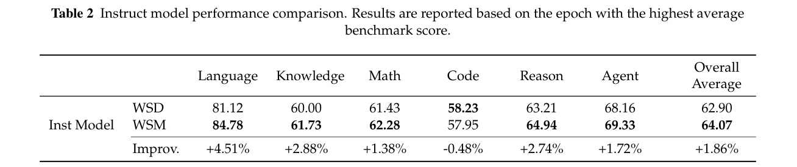
本节开展全面实证研究，剖析 WSM 调度。我们旨在理解影响其性能的关键因素、不同训练场景下的鲁棒性、与传统衰减机制的交互，以及对模型动态更广泛的影响。
除将 WSM 作为高质量数据集上的最后一步，我们还评估其在整个预训练生命周期中的效用与鲁棒性。为此，我们在长时间训练的不同中间阶段开展比较分析，将计算成本低廉的 WSM 合并所产生模型，与启动一次完整、资源密集型 LR 衰减所产生模型比较。如图 5a 所示，尽管相较 WSD 的性能收益不如切换到高质量数据时显著，但 WSM 合并模型的性能始终紧密对应真实 LR 退火的结果。图中的灰线表示使用恒定 LR 训练的基座模型；蓝线表示 WSM 模型，由之前 100B token 合并时长内的四个 checkpoint 均值合并得到；红线表示在 2T、4T、6T、8T、10T token 里程碑启动的完整 100B token 衰减训练。该结果确立 WSM 作为可靠、高保真代理的作用，可用于估计模型在训练任意时刻退火后的潜力。因此，它能够在整个预训练阶段提供有效评估，无需发起多次昂贵衰减训练以判断模型的真实能力。
如第 3.1 节推导，checkpoint 合并过程可视为对 LR 衰减调度的近似，其中合并加权方案类似于衰减曲线的函数形式。例如，简单均值平均类似线性衰减曲线；指数移动平均（EMA）对应凸指数衰减曲线。现有工作（Hägele et al., 2024）和我们此前 WSD 调度实验揭示（接下页）
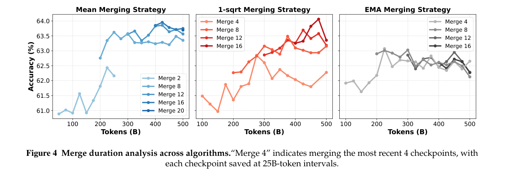
（续上页）不同衰减曲线之间存在性能层次：凹调度（如 inverse square root）和线性调度优于凸调度（细节见附录 C）。基于这些发现，我们假设：设计合并算法去近似已在 WSD 调度中证实有效的衰减曲线，同样能得到更好结果。
基于定理 3.1，我们通过实验比较三种合并算法：利用定理生成的权重近似 1-sqrt 衰减、简单均值平均，以及 EMA。表 3 的实验结果验证这一假设。合并方法优于衰减，1-sqrt 合并相较 Mean 略有优势，两者均明显优于 EMA。这一发现进一步强化 checkpoint 合并与 LR 衰减之间的理论联系，说明通过精心设计合并权重，可以有效获取优良衰减调度的收益。
我们进一步详细研究不同合并时长（窗口大小）对各种算法的影响。首先，不同合并时长本质上对应使用不同数据量进行衰减。如图 4 所示，对均值和 1-sqrt 两种合并算法，在整个合并轨迹中比较最佳 checkpoint 时，更大合并窗口往往得到更好结果。但随着窗口大小增加，这种优势逐渐减弱。该观察与此前实际 LR 衰减实验一致：单纯增加退火数据量存在收益递减，最终可能无法继续改进。这些发现进一步加强 LR 衰减与 checkpoint 合并之间的联系。对于 EMA 合并，其性能明显劣于其他算法，且不随合并时长发生清晰变化。这可能意味着 EMA 不是有效合并算法，也说明凸形态可能并非最优衰减曲线。
随后，我们进一步研究 checkpoint 合并的粒度，即用于合并的已保存 checkpoint 之间的间隔。更细粒度的合并更精确地近似真实衰减曲线。表 4 的结果显示，更细粒度合并往往获得更好性能。然而，频繁保存 checkpoint 带来存储开销，需要认真权衡。
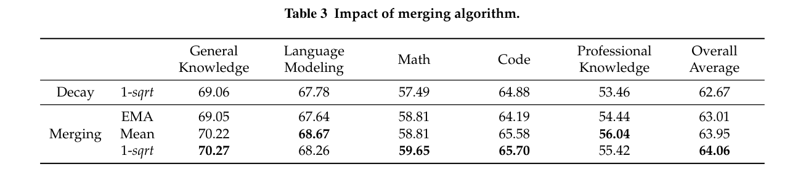
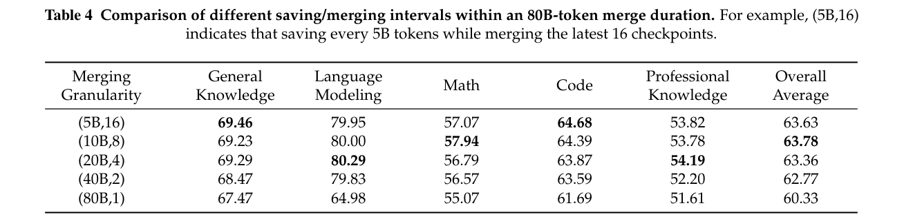
既然 checkpoint 合并能有效模拟 LR 衰减，自然会产生一个问题：能否将合并与衰减结合，获得协同性能收益？我们测试两种混合方法来研究这一问题。(1) 先衰减后合并（Decay-then-Merge）：先应用标准衰减调度，再合并从衰减阶段选取的 checkpoint。(2) 先合并后衰减（Merge-then-Decay）：对合并后模型进一步应用衰减调度。如图 5b、5c 所示，混合方法在两种配置中均未带来改进，不过先合并后衰减模型在训练开始时表现更好。对于先衰减后合并实验（图 5b），蓝色星号表示沿衰减轨迹（红线）选取 checkpoint 后合并的结果，这些衰减轨迹从不同预训练里程碑（4T、6T、8T、10T）启动。对于先合并后衰减实验（图 5c），我们将从 WSM 模型启动的衰减训练（蓝线）——该模型通过合并 9.8T 至 10T token 区间的四个 checkpoint 得到——与从单一 10T checkpoint 启动的标准衰减基线（红线）比较。这些结果表明，checkpoint 合并与 LR 衰减并非互补，而是通往相似优化目标的替代路径。
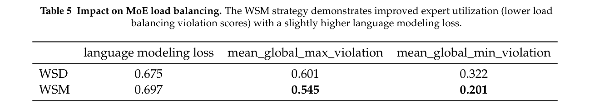
我们在表 5 中更深入分析 WSM 对 MoE router 均衡的影响。具体而言，单个专家的偏差（violation）计算为其负载相对于所在层平均（接下页）
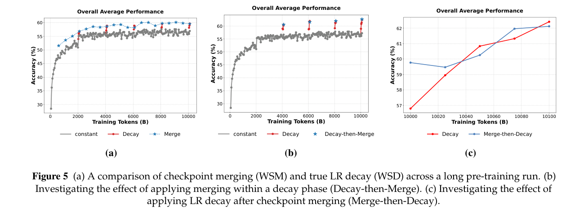
（续上页）负载的相对偏离1。mean_global_max_violation 表示所有层中最高偏差的平均值，用于衡量“过载”专家的严重程度；mean_global_min_violation 则对利用率最低专家的偏差取平均，用于衡量“路由坍塌”风险。比较合并 checkpoint 与衰减 checkpoint 时，合并 checkpoint 的路由更加均衡，尽管损失略高。我们认为，这种以损失小幅增加换取更好下游性能的权衡，体现了泛化增强，而非对训练数据过拟合。参数分布的更多分析见附录 D。
为直观分析训练过程中模型参数与性能的相关性，我们采用 t-SNE（van der Maaten and Hinton, 2008）降维，将特定层的权重矩阵投影到二维 embedding 空间。结合该投影与性能评估，生成图 6 所示的复合等高线图。可视化中的方向箭头明确展示恒定 LR 阶段和衰减阶段的参数轨迹。实验分析揭示两项主要发现：(1) 在衰减阶段，模型参数逐步向合并模型的解空间收敛，后者的性能优于恒定 LR checkpoint。(2) 衰减阶段降低 LR，使参数能比恒定 LR 下的大范围探索得到更精确的细化。这种受控收敛有助于定位附近的最优解。我们证实了先前工作 Wen et al.（2024）的推测，并用类比描述这一动态：恒定 LR 训练类似以振荡步伐穿越“峡谷”，而合并类似找到峡谷底部的一条“河流”，引导高效收敛。
1 对单层，令 \(L\) 为各专家 token 负载组成的向量，\(\mu=\mathrm{mean}(L)\)，则 \(\mathrm{max\_violation}=\frac{|\max(L)-\mu|}{\mu}\)，\(\mathrm{min\_violation}=\frac{|\min(L)-\mu|}{\mu}\)。
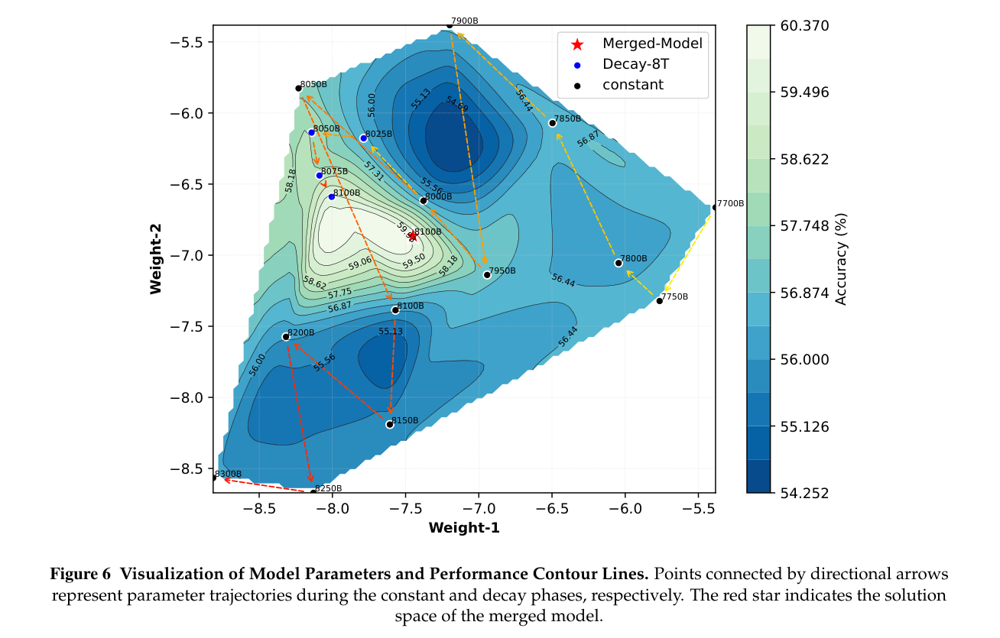
学习率（LR）调度对训练高性能模型至关重要（Jin et al., 2023; Gotmare et al., 2019）。余弦（Kaplan et al., 2020; Ibrahim et al., 2024）或线性（Defazio et al., 2023）等经典衰减调度，根据预定义总训练时长调整 LR，对持续训练缺乏灵活性。Warmup-Stable-Decay（WSD）调度（Hu et al., 2024）在 warmup 之后加入稳定 LR 阶段，将最终衰减与固定训练长度解耦，为长期或持续训练提供更大灵活性。近期研究进一步探索“无调度”方法，彻底消除衰减阶段，保持恒定 LR，转而利用权重平均技术（Defazio et al., 2024; Song et al., 2025; Zhang et al., 2025）。基于这些无调度原则，我们的工作提出以事后 checkpoint 合并操作，而非特定在线平均策略，替换 WSD 的衰减阶段。这简化训练流水线，并通过形式化 LR 衰减与 checkpoint 合并之间的联系，使衰减策略可获得理论近似，从而支持自由的离线探索，并提升模型性能。
模型合并（Izmailov et al., 2018; Wortsman et al., 2022）已成为高效构建模型的范式。该方法通过在参数层面整合多个模型，实现有效的知识迁移与性能提升。模型合并主要用于两种不同场景：(1) 将多个独立（接下页）
（续上页）训练模型的知识与能力整合到一组参数中，目标是最大程度保留每个专用模型的性能（Aakanksha et al., 2025; Ramé et al., 2024）；(2) 合并单条训练轨迹上的 checkpoint，这是一种 Polyak 平均（Polyak and Juditsky, 1992）。在这种应用中，合并操作作为平滑机制，减少随机 gradient 优化固有的噪声（Sanyal et al., 2023; Liu et al., 2024a; Kaddour, 2022; Li et al., 2023; Sandler et al., 2023; Hägele et al., 2024）。Li et al.（2025）表明，模型合并可获得与基于衰减的调度相媲美的性能；这些技术也已在工业规模 LLM 开发中显示实际效用（Grattafiori et al., 2024; DeepSeek-AI et al., 2024; Aakanksha et al., 2025）。我们的工作属于第二类，即合并同一轨迹上的 checkpoint。我们建立该操作与学习率衰减之间的理论联系，并提供有理论依据的方法，将各种 LR 衰减策略转换为理论近似的模型平均实现。
本文提出 WSM，一种用于 LLM 预训练的无衰减 LR 调度方法。我们的方法通过建立理论联系，连接 LR 衰减与 checkpoint 合并。通过消除传统衰减阶段，WSM 简化 LR 调度，同时将不同衰减策略重新表述为有理论依据的模型平均方案。系统分析发现，合并时长是影响模型性能最关键的因素，超过其他实现选择。大量实验证明 WSM 优于传统 WSD 调度，在多个基准上持续改善，并在微调期间保持收益。由于不依赖具体优化器的设计，WSM 具有广泛适用性，无需修改底层训练流水线。
未来，我们计划纳入更多衰减策略实例，扩展 WSM 框架，因为该框架可以直接将任何衰减策略转换为理论近似的 checkpoint 合并方案。鉴于这种灵活性，我们还希望使 WSM 适用于更复杂的调优场景，例如数据集混合优化。
Aakanksha, Arash Ahmadian, Marwan Ahmed, Jay Alammar, Milad Alizadeh, Yazeed Alnumay, Sophia Althammer, Arkady Arkhangorodsky, Viraat Aryabumi, Dennis Aumiller, Raphaël Avalos, Zahara Aviv, Sammie Bae, Saurabh Baji, Alexandre Barbet, Max Bartolo, Björn Bebensee, Neeral Beladia, Walter Beller-Morales, Alexandre Bérard, Andrew Berneshawi, Anna Bialas, Phil Blunsom, Matt Bobkin, Adi Bongale, Sam Braun, Maxime Brunet, Samuel Cahyawijaya, David Cairuz, Jon Ander Campos, Cassie Cao, Kris Cao, Roman Castagné, Julián Cendrero, Leila Chan Currie, Yash Chandak, Diane Chang, Giannis Chatziveroglou, Hongyu Chen, Claire Cheng, Alexis Chevalier, Justin T. Chiu, Eugene Choi, Eujeong Choi, Tim Chung, Volkan Cirik, Ana Cismaru, Pierre Clavier, Henry Conklin, Lucas Crawhall-Stein, Devon Crouse, Felipe Cruz-Salinas, Ben Cyrus, Daniel D’souza, Hugo Dalla-Torre, John Dang, William Darling, Omar Darwiche Domingues, Saurabh Dash, Antoine Debugne, Théo Dehaze, Shaan Desai, Joan Devassy, Rishit Dholakia, Kyle Duffy, Ali Edalati, Ace Eldeib, Abdullah Elkady, Sarah Elsharkawy, Irem Ergün, Beyza Ermis, Marzieh Fadaee, Boyu Fan, Lucas Fayoux, Yannis Flet-Berliac, Nick Frosst, Matthias Gallé, Wojciech Galuba, Utsav Garg, Matthieu Geist, Mohammad Gheshlaghi Azar, Ellen Gilsenan-McMahon, Seraphina Goldfarb-Tarrant, Tomas Goldsack, Aidan N. Gomez, Victor Machado Gonzaga, Nithya Govindarajan, Manoj Govindassamy, Nathan Grinsztajn, Nikolas Gritsch, Patrick Gu, Shangmin Guo, Kilian Haefeli, Rod Hajjar, Tim Hawes, Jingyi He, Sebastian Hofstätter, and Sungjin Hong. Command A：可供企业采用的大语言模型。 CoRR, abs/2504.00698, 2025. doi: 10.48550/ARXIV.2504.00698. https://doi.org/10.48550/arXiv.2504.00698.
Joshua Ainslie, James Lee-Thorp, Michiel de Jong, Yury Zemlyanskiy, Federico Lebrón, and Sumit Sanghai. GQA：从多头 checkpoint 训练广义多查询 transformer 模型。 In Houda Bouamor, Juan Pino, and Kalika Bali, editors, Proceedings of the 2023 Conference on Empirical Methods in Natural Language Processing, EMNLP （接下页）
（续上页）2023, Singapore, December 6-10, 2023, pages 4895–4901. Association for Computational Linguistics, 2023. doi: 10.18653/V1/2023.EMNLP-MAIN.298. https://doi.org/10.18653/v1/2023.emnlp-main.298.
Orly Alter, Patrick O Brown, and David Botstein. 用于全基因组表达数据处理与建模的奇异值分解。 Proceedings of the National Academy of Sciences, 97(18):10101–10106, 2000.
Mohammad Bavarian, Heewoo Jun, Nikolas Tezak, John Schulman, Christine McLeavey, Jerry Tworek, and Mark Chen. 高效训练语言模型以补全中间内容。 CoRR, abs/2207.14255, 2022. doi: 10.48550/ARXIV.2207.14255. https://doi.org/10.48550/arXiv.2207.14255.
Sumithra Bhakthavatsalam, Daniel Khashabi, Tushar Khot, Bhavana Dalvi Mishra, Kyle Richardson, Ashish Sabharwal, Carissa Schoenick, Oyvind Tafjord, and Peter Clark. 你认为已经解决直接回答问答了吗？试试 ARC-DA——直接回答式 AI2 推理挑战。 CoRR, abs/2102.03315, 2021. https://arxiv.org/abs/2102.03315.
Yonatan Bisk, Rowan Zellers, Ronan Le Bras, Jianfeng Gao, and Yejin Choi. PIQA：以自然语言进行物理常识推理。 In The Thirty-Fourth AAAI Conference on Artificial Intelligence, AAAI 2020, The Thirty-Second Innovative Applications of Artificial Intelligence Conference, IAAI 2020, The Tenth AAAI Symposium on Educational Advances in Artificial Intelligence, EAAI 2020, New York, NY, USA, February 7-12, 2020, pages 7432–7439. AAAI Press, 2020. doi: 10.1609/AAAI.V34I05.6239. https://doi.org/10.1609/aaai.v34i05.6239.
Mark Chen, Jerry Tworek, Heewoo Jun, Qiming Yuan, Henrique Pondé de Oliveira Pinto, Jared Kaplan, Harri Edwards, Yuri Burda, Nicholas Joseph, Greg Brockman, Alex Ray, Raul Puri, Gretchen Krueger, Michael Petrov, Heidy Khlaaf, Girish Sastry, Pamela Mishkin, Brooke Chan, Scott Gray, Nick Ryder, Mikhail Pavlov, Alethea Power, Lukasz Kaiser, Mohammad Bavarian, Clemens Winter, Philippe Tillet, Felipe Petroski Such, Dave Cummings, Matthias Plappert, Fotios Chantzis, Elizabeth Barnes, Ariel Herbert-Voss, William Hebgen Guss, Alex Nichol, Alex Paino, Nikolas Tezak, Jie Tang, Igor Babuschkin, Suchir Balaji, Shantanu Jain, William Saunders, Christopher Hesse, Andrew N. Carr, Jan Leike, Joshua Achiam, Vedant Misra, Evan Morikawa, Alec Radford, Matthew Knight, Miles Brundage, Mira Murati, Katie Mayer, Peter Welinder, Bob McGrew, Dario Amodei, Sam McCandlish, Ilya Sutskever, and Wojciech Zaremba. 评估使用代码训练的大语言模型。 CoRR, abs/2107.03374, 2021. https://arxiv.org/abs/2107.03374.
Karl Cobbe, Vineet Kosaraju, Mohammad Bavarian, Mark Chen, Heewoo Jun, Lukasz Kaiser, Matthias Plappert, Jerry Tworek, Jacob Hilton, Reiichiro Nakano, Christopher Hesse, and John Schulman. 训练验证器以解决数学文字题。 CoRR, abs/2110.14168, 2021. https://arxiv.org/abs/2110.14168.
DeepSeek-AI, Aixin Liu, Bei Feng, Bing Xue, Bingxuan Wang, Bochao Wu, Chengda Lu, Chenggang Zhao, Chengqi Deng, Chenyu Zhang, Chong Ruan, Damai Dai, Daya Guo, Dejian Yang, Deli Chen, Dongjie Ji, Erhang Li, Fangyun Lin, Fucong Dai, Fuli Luo, Guangbo Hao, Guanting Chen, Guowei Li, H. Zhang, Han Bao, Hanwei Xu, Haocheng Wang, Haowei Zhang, Honghui Ding, Huajian Xin, Huazuo Gao, Hui Li, Hui Qu, J. L. Cai, Jian Liang, Jianzhong Guo, Jiaqi Ni, Jiashi Li, Jiawei Wang, Jin Chen, Jingchang Chen, Jingyang Yuan, Junjie Qiu, Junlong Li, Junxiao Song, Kai Dong, Kai Hu, Kaige Gao, Kang Guan, Kexin Huang, Kuai Yu, Lean Wang, Lecong Zhang, Lei Xu, Leyi Xia, Liang Zhao, Litong Wang, Liyue Zhang, Meng Li, Miaojun Wang, Mingchuan Zhang, Minghua Zhang, Minghui Tang, Mingming Li, Ning Tian, Panpan Huang, Peiyi Wang, Peng Zhang, Qiancheng Wang, Qihao Zhu, Qinyu Chen, Qiushi Du, R. J. Chen, R. L. Jin, Ruiqi Ge, Ruisong Zhang, Ruizhe Pan, Runji Wang, Runxin Xu, Ruoyu Zhang, Ruyi Chen, S. S. Li, Shanghao Lu, Shangyan Zhou, Shanhuang Chen, Shaoqing Wu, Shengfeng Ye, Shengfeng Ye, Shirong Ma, Shiyu Wang, Shuang Zhou, Shuiping Yu, Shunfeng Zhou, Shuting Pan, T. Wang, Tao Yun, Tian Pei, Tianyu Sun, W. L. Xiao, and Wangding Zeng. DeepSeek-V3 技术报告。 CoRR, abs/2412.19437, 2024. doi: 10.48550/ARXIV.2412.19437. https://doi.org/10.48550/arXiv.2412.19437.
Aaron Defazio, Ashok Cutkosky, Harsh Mehta, and Konstantin Mishchenko. 最优线性衰减学习率调度及进一步改进。 arXiv preprint arXiv:2310.07831, 2023.
Aaron Defazio, Xingyu Yang, Ahmed Khaled, Konstantin Mishchenko, Harsh Mehta, and Ashok Cutkosky. 较少调度之路。 In NeurIPS, 2024.
Baidu ERNIE-Team. ERNIE 4.5 技术报告，2025。
Akhilesh Gotmare, Nitish Shirish Keskar, Caiming Xiong, and Richard Socher. 深入观察深度学习启发式方法：学习率重启、warmup 与蒸馏。 In 7th International Conference on Learning Representations, ICLR 2019, New Orleans, LA, USA, May 6-9, 2019. OpenReview.net, 2019. https://openreview.net/forum?id=r14EOsCqKX.
Aaron Grattafiori, Abhimanyu Dubey, Abhinav Jauhri, Abhinav Pandey, Abhishek Kadian, Ahmad Al-Dahle, Aiesha Letman, Akhil Mathur, Alan Schelten, Alex Vaughan, et al. Llama 3 模型家族。 arXiv preprint arXiv:2407.21783, 2024.
Alex Gu, Baptiste Rozière, Hugh James Leather, Armando Solar-Lezama, Gabriel Synnaeve, and Sida Wang. CruxEval：代码推理、理解与执行基准。 In Forty-first International Conference on Machine Learning, ICML 2024, Vienna, Austria, July 21-27, 2024. OpenReview.net, 2024. https://openreview.net/forum?id=Ffpg52swvg.
Alexander Hägele, Elie Bakouch, Atli Kosson, Loubna Ben Allal, Leandro von Werra, and Martin Jaggi. 超越固定训练时长的 scaling laws 与计算最优训练。 In NeurIPS, 2024.
Dan Hendrycks, Collin Burns, Steven Basart, Andy Zou, Mantas Mazeika, Dawn Song, and Jacob Steinhardt. 衡量大规模多任务语言理解能力。 In 9th International Conference on Learning Representations, ICLR 2021, Virtual Event, Austria, May 3-7, 2021. OpenReview.net, 2021a. https://openreview.net/forum?id=d7KBjmI3GmQ.
Dan Hendrycks, Collin Burns, Saurav Kadavath, Akul Arora, Steven Basart, Eric Tang, Dawn Song, and Jacob Steinhardt. 使用 MATH 数据集衡量数学问题求解能力。 In Joaquin Vanschoren and Sai-Kit Yeung, editors, Proceedings of the Neural Information Processing Systems Track on Datasets and Benchmarks 1, NeurIPS Datasets and Benchmarks 2021, December 2021, virtual, 2021b. https://datasets-benchmarks-proceedings.neurips.cc/paper/2021/hash/be83ab3ecd0db773eb2dc1b0a17836a1-Abstract-round2.html.
Jordan Hoffmann, Sebastian Borgeaud, Arthur Mensch, Elena Buchatskaya, Trevor Cai, Eliza Rutherford, Diego de Las Casas, Lisa Anne Hendricks, Johannes Welbl, Aidan Clark, et al. 训练计算最优的大语言模型。 arXiv preprint arXiv:2203.15556, 2022.
Jack Hong, Shilin Yan, Jiayin Cai, Xiaolong Jiang, Yao Hu, and Weidi Xie. WorldSense：评估多模态 LLM 的真实世界全模态理解能力。 CoRR, abs/2502.04326, 2025. doi: 10.48550/ARXIV.2502.04326. https://doi.org/10.48550/arXiv.2502.04326.
Shengding Hu, Yuge Tu, Xu Han, Chaoqun He, Ganqu Cui, Xiang Long, Zhi Zheng, Yewei Fang, Yuxiang Huang, Weilin Zhao, Xinrong Zhang, Zhen Leng Thai, Kai Zhang, Chongyi Wang, Yuan Yao, Chenyang Zhao, Jie Zhou, Jie Cai, Zhongwu Zhai, Ning Ding, Chao Jia, Guoyang Zeng, Dahai Li, Zhiyuan Liu, and Maosong Sun. MiniCPM：通过可扩展训练策略揭示小语言模型的潜力。 CoRR, abs/2404.06395, 2024. doi: 10.48550/ARXIV.2404.06395. https://doi.org/10.48550/arXiv.2404.06395.
Yuzhen Huang, Yuzhuo Bai, Zhihao Zhu, Junlei Zhang, Jinghan Zhang, Tangjun Su, Junteng Liu, Chuancheng Lv, Yikai Zhang, Jiayi Lei, Yao Fu, Maosong Sun, and Junxian He. C-Eval：面向基础模型的多层次、多学科中文评估套件。 In Alice Oh, Tristan Naumann, Amir Globerson, Kate Saenko, Moritz Hardt, and Sergey Levine, editors, Advances in Neural Information Processing Systems 36: Annual Conference on Neural Information Processing Systems 2023, NeurIPS 2023, New Orleans, LA, USA, December 10 - 16, 2023, 2023. http://papers.nips.cc/paper_files/paper/2023/hash/c6ec1844bec96d6d32ae95ae694e23d8-Abstract-Datasets_and_Benchmarks.html.
Adam Ibrahim, Benjamin Thérien, Kshitij Gupta, Mats L. Richter, Quentin Gregory Anthony, Eugene Belilovsky, Timothée Lesort, and Irina Rish. 持续预训练大语言模型的简单且可扩展策略。 Trans. Mach. Learn. Res., 2024, 2024. https://openreview.net/forum?id=DimPeeCxKO.
Pavel Izmailov, Dmitrii Podoprikhin, Timur Garipov, Dmitry P. Vetrov, and Andrew Gordon Wilson. 权重平均带来更宽的最优区域和更好的泛化。 In Amir Globerson and Ricardo Silva, editors, Proceedings of the Thirty-Fourth Conference on Uncertainty in Artificial Intelligence, UAI 2018, Monterey, California, USA, August 6-10, 2018, pages 876–885. AUAI Press, 2018. http://auai.org/uai2018/proceedings/papers/313.pdf.
Naman Jain, King Han, Alex Gu, Wen-Ding Li, Fanjia Yan, Tianjun Zhang, Sida Wang, Armando Solar-Lezama, Koushik Sen, and Ion Stoica. LiveCodeBench：面向代码的大语言模型全面无污染评估。 In The Thirteenth International Conference on Learning Representations, ICLR 2025, Singapore, April 24-28, 2025. OpenReview.net, 2025. https://openreview.net/forum?id=chfJJYC3iL.
Hongpeng Jin, Wenqi Wei, Xuyu Wang, Wenbin Zhang, and Yanzhao Wu. 在大语言模型时代重新思考学习率调优。 In 5th IEEE International Conference on Cognitive Machine Intelligence, CogMI 2023, Atlanta, GA, USA, November 1-4, 2023, pages 112–121. IEEE, 2023. doi: 10.1109/COGMI58952.2023.00025. https://doi.org/10.1109/CogMI58952.2023.00025.
Mandar Joshi, Eunsol Choi, Daniel S. Weld, and Luke Zettlemoyer. TriviaQA：面向阅读理解的大规模远程监督挑战数据集。 In Regina Barzilay and Min-Yen Kan, editors, Proceedings of the 55th Annual Meeting of the Association for Computational Linguistics, ACL 2017, Vancouver, Canada, July 30 - August 4, Volume 1: Long Papers, pages 1601–1611. Association for Computational Linguistics, 2017. doi: 10.18653/V1/P17-1147. https://doi.org/10.18653/v1/P17-1147.
Jean Kaddour. 别再浪费我的时间！通过近期权重平均节省数天 ImageNet 和 BERT 训练。 CoRR, abs/2209.14981, 2022. doi: 10.48550/ARXIV.2209.14981. https://doi.org/10.48550/arXiv.2209.14981.
Jared Kaplan, Sam McCandlish, Tom Henighan, Tom B Brown, Benjamin Chess, Rewon Child, Scott Gray, Alec Radford, Jeffrey Wu, and Dario Amodei. 神经语言模型的 scaling laws。 arXiv preprint arXiv:2001.08361, 2020.
Diederik P. Kingma and Jimmy Ba. Adam：一种随机优化方法。 In Yoshua Bengio and Yann LeCun, editors, 3rd International Conference on Learning Representations, ICLR 2015, San Diego, CA, USA, May 7-9, 2015, Conference Track Proceedings, 2015. http://arxiv.org/abs/1412.6980.
Tom Kwiatkowski, Jennimaria Palomaki, Olivia Redfield, Michael Collins, Ankur P. Parikh, Chris Alberti, Danielle Epstein, Illia Polosukhin, Jacob Devlin, Kenton Lee, Kristina Toutanova, Llion Jones, Matthew Kelcey, Ming-Wei Chang, Andrew M. Dai, Jakob Uszkoreit, Quoc Le, and Slav Petrov. Natural Questions：问答研究基准。 Trans. Assoc. Comput. Linguistics, 7:452–466, 2019. doi: 10.1162/TACL_A_00276. https://doi.org/10.1162/tacl_a_00276.
Guokun Lai, Qizhe Xie, Hanxiao Liu, Yiming Yang, and Eduard H. Hovy. RACE：来自考试的大规模阅读理解数据集。 In Martha Palmer, Rebecca Hwa, and Sebastian Riedel, editors, Proceedings of the 2017 Conference on Empirical Methods in Natural Language Processing, EMNLP 2017, Copenhagen, Denmark, September 9-11, 2017, pages 785–794. Association for Computational Linguistics, 2017. doi: 10.18653/V1/D17-1082. https://doi.org/10.18653/v1/d17-1082.
Haonan Li, Yixuan Zhang, Fajri Koto, Yifei Yang, Hai Zhao, Yeyun Gong, Nan Duan, and Timothy Baldwin. CMMLU：衡量中文大规模多任务语言理解能力。 In Lun-Wei Ku, Andre Martins, and Vivek Srikumar, editors, Findings of the Association for Computational Linguistics, ACL 2024, Bangkok, Thailand and virtual meeting, August 11-16, 2024, pages 11260–11285. Association for Computational Linguistics, 2024a. doi: 10.18653/V1/2024.FINDINGS-ACL.671. https://doi.org/10.18653/v1/2024.findings-acl.671.
Qintong Li, Leyang Cui, Xueliang Zhao, Lingpeng Kong, and Wei Bi. GSM-Plus：全面评估 LLM 作为数学问题求解器鲁棒性的基准。 In Lun-Wei Ku, Andre Martins, and Vivek Srikumar, editors, Proceedings of the 62nd Annual Meeting of the Association for Computational Linguistics (Volume 1: Long Papers), ACL 2024, Bangkok, Thailand, August 11-16, 2024, pages 2961–2984. Association for Computational Linguistics, 2024b. doi: 10.18653/V1/2024.ACL-LONG.163. https://doi.org/10.18653/v1/2024.acl-long.163.
Tao Li, Zhehao Huang, Qinghua Tao, Yingwen Wu, and Xiaolin Huang. 可训练权重平均：通过优化历史解实现高效训练。 In The Eleventh International Conference on Learning Representations, ICLR 2023, Kigali, Rwanda, May 1-5, 2023. OpenReview.net, 2023. https://openreview.net/forum?id=8wbnpOJY-f.
Yunshui Li, Yiyuan Ma, Shen Yan, Chaoyi Zhang, Jing Liu, Jianqiao Lu, Ziwen Xu, Mengzhao Chen, Minrui Wang, Shiyi Zhan, Jin Ma, Xunhao Lai, Deyi Liu, Yao Luo, Xingyan Bin, Hongbin Ren, Mingji Han, Wenhao Hao, Bairen Yi, LingJun Liu, Bole Ma, Xiaoying Jia, Xun Zhou, Siyuan Qiao, Liang Xiang, and Yonghui Wu. 大语言模型预训练中的模型合并。 CoRR, abs/2505.12082, 2025. doi: 10.48550/ARXIV.2505.12082. https://doi.org/10.48550/arXiv.2505.12082.
Ling-Team, Binwei Zeng, Chao Huang, Chao Zhang, Changxin Tian, Cong Chen, Dingnan Jin, Feng Yu, Feng Zhu, Feng Yuan, et al. 每一份 FLOP 都重要：无需高端 GPU 扩展 300B MoE Ling LLM。 arXiv preprint arXiv:2503.05139, 2025.
Deyuan Liu, Zecheng Wang, Bingning Wang, Weipeng Chen, Chunshan Li, Zhiying Tu, Dianhui Chu, Bo Li, and Dianbo Sui. LLM 预训练中通过贝叶斯优化合并 checkpoint。 CoRR, abs/2403.19390, 2024a. doi: 10.48550/ARXIV.2403.19390. https://doi.org/10.48550/arXiv.2403.19390.
Hongwei Liu, Zilong Zheng, Yuxuan Qiao, Haodong Duan, Zhiwei Fei, Fengzhe Zhou, Wenwei Zhang, Songyang Zhang, Dahua Lin, and Kai Chen. MathBench：用分层数学基准评估 LLM 的理论与应用熟练程度。 In Lun-Wei Ku, Andre Martins, and Vivek Srikumar, editors, Findings of the Association for Computational Linguistics, ACL 2024, Bangkok, Thailand and virtual meeting, August 11-16, 2024, pages 6884–6915. Association for Computational Linguistics, 2024b. doi: 10.18653/V1/2024.FINDINGS-ACL.411. https://doi.org/10.18653/v1/2024.findings-acl.411.
Jiawei Liu, Chunqiu Steven Xia, Yuyao Wang, and Lingming Zhang. ChatGPT 生成的代码真的正确吗？对大语言模型代码生成的严格评估。 In Alice Oh, Tristan Naumann, Amir Globerson, Kate Saenko, Moritz Hardt, and Sergey Levine, editors, Advances in Neural Information Processing Systems 36: Annual Conference on Neural Information Processing Systems 2023, NeurIPS 2023, New Orleans, LA, USA, December 10 - 16, 2023, 2023. http://papers.nips.cc/paper_files/paper/2023/hash/43e9d647ccd3e4b7b5baab53f0368686-Abstract-Conference.html.
Jingyuan Liu, Jianlin Su, Xingcheng Yao, Zhejun Jiang, Guokun Lai, Yulun Du, Yidao Qin, Weixin Xu, Enzhe Lu, Junjie Yan, Yanru Chen, Huabin Zheng, Yibo Liu, Shaowei Liu, Bohong Yin, Weiran He, Han Zhu, Yuzhi Wang, Jianzhou （接下页）
（续上页）Wang, Mengnan Dong, Zheng Zhang, Yongsheng Kang, Hao Zhang, Xinran Xu, Yutao Zhang, Yuxin Wu, Xinyu Zhou, and Zhilin Yang. Muon 可扩展至 LLM 训练，2025。 https://arxiv.org/abs/2502.16982.
Ilya Loshchilov and Frank Hutter. 解耦权重衰减正则化。 In 7th International Conference on Learning Representations, ICLR 2019, New Orleans, LA, USA, May 6-9, 2019. OpenReview.net, 2019. https://openreview.net/forum?id=Bkg6RiCqY7.
Kaijing Ma, Xeron Du, Yunran Wang, Haoran Zhang, Zhoufutu Wen, Xingwei Qu, Jian Yang, Jiaheng Liu, Minghao Liu, Xiang Yue, Wenhao Huang, and Ge Zhang. KOR-Bench：在知识正交推理任务上评估语言模型。 In The Thirteenth International Conference on Learning Representations, ICLR 2025, Singapore, April 24-28, 2025. OpenReview.net, 2025. https://openreview.net/forum?id=SVRRQ8goQo.
Todor Mihaylov, Peter Clark, Tushar Khot, and Ashish Sabharwal. 一套盔甲能导电吗？开放书本问答的新数据集。 In Ellen Riloff, David Chiang, Julia Hockenmaier, and Jun’ichi Tsujii, editors, Proceedings of the 2018 Conference on Empirical Methods in Natural Language Processing, Brussels, Belgium, October 31 - November 4, 2018, pages 2381–2391. Association for Computational Linguistics, 2018. doi: 10.18653/V1/D18-1260. https://doi.org/10.18653/v1/d18-1260.
Qiwei Peng, Yekun Chai, and Xuhong Li. HumanEval-XL：面向跨语言自然语言泛化的多语言代码生成基准。 In Nicoletta Calzolari, Min-Yen Kan, Véronique Hoste, Alessandro Lenci, Sakriani Sakti, and Nianwen Xue, editors, Proceedings of the 2024 Joint International Conference on Computational Linguistics, Language Resources and Evaluation, LREC/COLING 2024, 20-25 May, 2024, Torino, Italy, pages 8383–8394. ELRA and ICCL, 2024. https://aclanthology.org/2024.lrec-main.735.
Boris T Polyak and Anatoli B Juditsky. 通过平均加速随机逼近。 SIAM journal on control and optimization, 30(4):838–855, 1992.
Pranav Rajpurkar, Robin Jia, and Percy Liang. 知道自己不知道什么：SQuAD 中不可回答的问题。 In Iryna Gurevych and Yusuke Miyao, editors, Proceedings of the 56th Annual Meeting of the Association for Computational Linguistics, ACL 2018, Melbourne, Australia, July 15-20, 2018, Volume 2: Short Papers, pages 784–789. Association for Computational Linguistics, 2018. doi: 10.18653/V1/P18-2124. https://aclanthology.org/P18-2124/.
Alexandre Ramé, Johan Ferret, Nino Vieillard, Robert Dadashi, Léonard Hussenot, Pierre-Louis Cedoz, Pier Giuseppe Sessa, Sertan Girgin, Arthur Douillard, and Olivier Bachem. WARP：权重平均奖励策略的优势。 CoRR, abs/2406.16768, 2024. doi: 10.48550/ARXIV.2406.16768. https://doi.org/10.48550/arXiv.2406.16768.
David Rein, Betty Li Hou, Asa Cooper Stickland, Jackson Petty, Richard Yuanzhe Pang, Julien Dirani, Julian Michael, and Samuel R. Bowman. GPQA：研究生级、无法通过 Google 搜索轻松解答的问答基准。 CoRR, abs/2311.12022, 2023. doi: 10.48550/ARXIV.2311.12022. https://doi.org/10.48550/arXiv.2311.12022.
Olivier Roy and Martin Vetterli. 有效秩：有效维度的度量。 In 2007 15th European signal processing conference, pages 606–610. IEEE, 2007.
Keisuke Sakaguchi, Ronan Le Bras, Chandra Bhagavatula, and Yejin Choi. WinoGrande：大规模对抗式 Winograd schema 挑战。 Commun. ACM, 64(9):99–106, 2021. doi: 10.1145/3474381. https://doi.org/10.1145/3474381.
Mark Sandler, Andrey Zhmoginov, Max Vladymyrov, and Nolan Miller. 训练轨迹、mini-batch 损失与学习率的奇妙作用。 CoRR, abs/2301.02312, 2023.
Sunny Sanyal, Atula Neerkaje, Jean Kaddour, Abhishek Kumar, and Sujay Sanghavi. 早期权重平均与 LLM 预训练高学习率的结合。 arXiv preprint arXiv:2306.03241, 2023.
Freda Shi, Mirac Suzgun, Markus Freitag, Xuezhi Wang, Suraj Srivats, Soroush Vosoughi, Hyung Won Chung, Yi Tay, Sebastian Ruder, Denny Zhou, Dipanjan Das, and Jason Wei. 语言模型是多语言 chain-of-thought 推理器。 In The Eleventh International Conference on Learning Representations, ICLR 2023, Kigali, Rwanda, May 1-5, 2023. OpenReview.net, 2023. https://openreview.net/forum?id=fR3wGCk-IXp.
Minhak Song, Beomhan Baek, Kwangjun Ahn, and Chulhee Yun. 穿越河流：理解无调度方法对语言模型训练的益处。 In High-dimensional Learning Dynamics 2025, 2025.
Jianlin Su, Murtadha H. M. Ahmed, Yu Lu, Shengfeng Pan, Wen Bo, and Yunfeng Liu. RoFormer：带旋转位置 embedding 的增强型 transformer。 Neurocomputing, 568:127063, 2024. doi: 10.1016/J.NEUCOM.2023.127063. https://doi.org/10.1016/j.neucom.2023.127063.
Mirac Suzgun, Nathan Scales, Nathanael Schärli, Sebastian Gehrmann, Yi Tay, Hyung Won Chung, Aakanksha Chowdhery, Quoc V. Le, Ed H. Chi, Denny Zhou, and Jason Wei. 具有挑战性的 BIG-Bench 任务，以及 chain-of-thought 能否 （接下页）
（续上页）解决这些任务。 In Anna Rogers, Jordan L. Boyd-Graber, and Naoaki Okazaki, editors, Findings of the Association for Computational Linguistics: ACL 2023, Toronto, Canada, July 9-14, 2023, pages 13003–13051. Association for Computational Linguistics, 2023. doi: 10.18653/V1/2023.FINDINGS-ACL.824. https://doi.org/10.18653/v1/2023.findings-acl.824.
Zhengyang Tang, Xingxing Zhang, Benyou Wang, and Furu Wei. MathScale：扩展数学推理的指令调优。 In Forty-first International Conference on Machine Learning, ICML 2024, Vienna, Austria, July 21-27, 2024. OpenReview.net, 2024. https://openreview.net/forum?id=Kjww7ZN47M.
Ning Tao, Anthony Ventresque, Vivek Nallur, and Takfarinas Saber. 通过多目标语法引导遗传编程，增强使用大语言模型的程序合成。 Algorithms, 17(7):287, 2024. doi: 10.3390/A17070287. https://doi.org/10.3390/a17070287.
M.-A-P. Team, Xinrun Du, Yifan Yao, Kaijing Ma, Bingli Wang, Tianyu Zheng, Kang Zhu, Minghao Liu, Yiming Liang, Xiaolong Jin, Zhenlin Wei, Chujie Zheng, Kaixin Deng, Shian Jia, Sichao Jiang, Yiyan Liao, Rui Li, Qinrui Li, Sirun Li, Yizhi Li, Yunwen Li, Dehua Ma, Yuansheng Ni, Haoran Que, Qiyao Wang, Zhoufutu Wen, Siwei Wu, Tianshun Xing, Ming Xu, Zhenzhu Yang, Zekun Moore Wang, Jun Zhou, Yuelin Bai, Xingyuan Bu, Chenglin Cai, Liang Chen, Yifan Chen, Chengtuo Cheng, Tianhao Cheng, Keyi Ding, Siming Huang, Yun Huang, Yaoru Li, Yizhe Li, Zhaoqun Li, Tianhao Liang, Chengdong Lin, Hongquan Lin, Yinghao Ma, Tianyang Pang, Zhongyuan Peng, Zifan Peng, Qige Qi, Shi Qiu, Xingwei Qu, Shanghaoran Quan, Yizhou Tan, Zili Wang, Chenqing Wang, Hao Wang, Yiya Wang, Yubo Wang, Jiajun Xu, Kexin Yang, Ruibin Yuan, Yuanhao Yue, Tianyang Zhan, Chun Zhang, Jinyang Zhang, Xiyue Zhang, Xingjian Zhang, Yue Zhang, Yongchi Zhao, Xiangyu Zheng, Chenghua Zhong, Yang Gao, Zhoujun Li, Dayiheng Liu, Qian Liu, Tianyu Liu, Shiwen Ni, Junran Peng, Yujia Qin, Wenbo Su, Guoyin Wang, Shi Wang, Jian Yang, Min Yang, Meng Cao, Xiang Yue, Zhaoxiang Zhang, Wangchunshu Zhou, Jiaheng Liu, Qunshu Lin, Wenhao Huang, and Ge Zhang. SuperGPQA：将 LLM 评估扩展至 285 个研究生学科。 CoRR, abs/2502.14739, 2025. doi: 10.48550/ARXIV.2502.14739. https://doi.org/10.48550/arXiv.2502.14739.
Laurens van der Maaten and Geoffrey Hinton. 使用 t-SNE 可视化数据。 Journal of Machine Learning Research, 9:2579–2605, 2008. http://www.jmlr.org/papers/v9/vandermaaten08a.html.
Yubo Wang, Xueguang Ma, Ge Zhang, Yuansheng Ni, Abhranil Chandra, Shiguang Guo, Weiming Ren, Aaran Arulraj, Xuan He, Ziyan Jiang, Tianle Li, Max Ku, Kai Wang, Alex Zhuang, Rongqi Fan, Xiang Yue, and Wenhu Chen. MMLU-Pro：更加稳健、更具挑战性的多任务语言理解基准。 In Amir Globersons, Lester Mackey, Danielle Belgrave, Angela Fan, Ulrich Paquet, Jakub M. Tomczak, and Cheng Zhang, editors, Advances in Neural Information Processing Systems 38: Annual Conference on Neural Information Processing Systems 2024, NeurIPS 2024, Vancouver, BC, Canada, December 10 - 15, 2024, 2024. http://papers.nips.cc/paper_files/paper/2024/hash/ad236edc564f3e3156e1b2feafb99a24-Abstract-Datasets_and_Benchmarks_Track.html.
Tianwen Wei, Jian Luan, Wei Liu, Shuang Dong, and Bin Wang. CMATH：你的语言模型能通过中国小学数学测试吗？ CoRR, abs/2306.16636, 2023. doi: 10.48550/ARXIV.2306.16636. https://doi.org/10.48550/arXiv.2306.16636.
Kaiyue Wen, Zhiyuan Li, Jason Wang, David Hall, Percy Liang, and Tengyu Ma. 理解 warmup-stable-decay 学习率：河谷损失景观视角。 arXiv preprint arXiv:2410.05192, 2024.
Mitchell Wortsman, Gabriel Ilharco, Samir Yitzhak Gadre, Rebecca Roelofs, Raphael Gontijo Lopes, Ari S. Morcos, Hongseok Namkoong, Ali Farhadi, Yair Carmon, Simon Kornblith, and Ludwig Schmidt. Model Soups：对多个微调模型的权重取平均，在不增加推理时间的情况下提高准确率。 In Kamalika Chaudhuri, Stefanie Jegelka, Le Song, Csaba Szepesvári, Gang Niu, and Sivan Sabato, editors, International Conference on Machine Learning, ICML 2022, 17-23 July 2022, Baltimore, Maryland, USA, volume 162 of Proceedings of Machine Learning Research, pages 23965–23998. PMLR, 2022. https://proceedings.mlr.press/v162/wortsman22a.html.
Rowan Zellers, Ari Holtzman, Yonatan Bisk, Ali Farhadi, and Yejin Choi. HellaSwag：机器真的能补完你的句子吗？ In Anna Korhonen, David R. Traum, and Lluís Màrquez, editors, Proceedings of the 57th Conference of the Association for Computational Linguistics, ACL 2019, Florence, Italy, July 28- August 2, 2019, Volume 1: Long Papers, pages 4791–4800. Association for Computational Linguistics, 2019. doi: 10.18653/V1/P19-1472. https://doi.org/10.18653/v1/p19-1472.
Hanlin Zhang, Depen Morwani, Nikhil Vyas, Jingfeng Wu, Difan Zou, Udaya Ghai, Dean P. Foster, and Sham M. Kakade. 预训练中的临界 batch 大小如何随规模变化？ In ICLR. OpenReview.net, 2025.
Jingzhao Zhang, Tianxing He, Suvrit Sra, and Ali Jadbabaie. 为什么 gradient 裁剪能加速训练：自适应性的理论解释。 In 8th International Conference on Learning Representations, ICLR 2020, Addis Ababa, Ethiopia, April 26-30, 2020. OpenReview.net, 2020. https://openreview.net/forum?id=BJgnXpVYwS.
Xiaotian Zhang, Chunyang Li, Yi Zong, Zhengyu Ying, Liang He, and Xipeng Qiu. 评估大语言模型在 GAOKAO 基准上的性能。 CoRR, abs/2305.12474, 2023. doi: 10.48550/ARXIV.2305.12474. https://doi.org/10.48550/arXiv.2305.12474.
Wanjun Zhong, Ruixiang Cui, Yiduo Guo, Yaobo Liang, Shuai Lu, Yanlin Wang, Amin Saied, Weizhu Chen, and Nan Duan. AGIEval：以人为中心的基础模型评估基准。 In Kevin Duh, Helena Gómez-Adorno, and Steven Bethard, editors, Findings of the Association for Computational Linguistics: NAACL 2024, Mexico City, Mexico, June 16-21, 2024, pages 2299–2314. Association for Computational Linguistics, 2024. doi: 10.18653/V1/2024.FINDINGS-NAACL.149. https://doi.org/10.18653/v1/2024.findings-naacl.149.
模型架构。实验模型的核心架构详见表 6。模型配置为 20 层，隐藏维度大小为 2048。除第一层之外，所有 FFN 层均替换为 MoE 层。我们采用 GQA attention 机制（Ainslie et al., 2023），并整合旋转位置 embedding（RoPE）（Su et al., 2024），使模型支持最长 8K token 的序列。参数初始化时，所有可学习参数均使用标准差 0.006 随机初始化。在此配置下，模型总计 163 亿参数，推理时每个 token 约激活 14.3 亿参数。
训练超参数。我们使用 AdamW 优化器（Loshchilov and Hutter, 2019），超参数设置为：\(\beta_1=0.9\)、\(\beta_2=0.95\)，权重衰减 0.1。Gradient 裁剪（Zhang et al., 2020）的 norm 设为 1.0。根据 MoE 最优超参数的 scaling laws，最大学习率设为 3.74e−4。Batch 大小设为 2048，最大序列长度为 8K，因此每个训练 batch 包含 16M token。
预训练数据集。训练数据来源于 Ling Team 构建的大规模多语言语料，主要覆盖英语和中文，也包含多种其他语言。语料涵盖网页文本、数学材料、编程脚本、出版文献及多样化文本内容。为验证模型性能，我们从中提取 10T token 子集用于训练。
评估设置。为评估性能，我们选取多样化下游任务，旨在全面衡量模型能力。对于基座模型，任务分为若干类别：(a) 通用知识／推理，例如 ARC（Bhakthavatsalam et al., 2021）、AGIEval（Zhong et al., 2024）、OpenBookQA（Mihaylov et al., 2018）、BBH（Suzgun et al., 2023）、WorldSense（Hong et al., 2025）、PIQA（Bisk et al., 2020）、hellaswag（Zellers et al., 2019）和 KOR-Bench（Ma et al., 2025）；(b) 语言理解，例如 race（Lai et al., 2017）、SQuAD 2.0（Rajpurkar et al., 2018）、TriviaQA（Joshi et al., 2017）、NQ（Kwiatkowski et al., 2019）和 winogrande（Sakaguchi et al., 2021）；(c) 专业知识，例如 MMLU（Hendrycks et al., 2021a）、CMMLU（Li et al., 2024a）、C-Eval（Huang et al., 2023）、MMLU-Pro（Wang et al., 2024）、GPQA（Rein et al., 2023）和 SuperGPQA（Team et al., 2025）；(d) 数学，例如 GSM8K（Cobbe et al., 2021）、MATH（Hendrycks et al., 2021b）、gaokao（Zhang et al., 2023）、GSM-Plus（Li et al., 2024b）、（接下页）
（续上页）mgsm-zh（Shi et al., 2023）、CMATH（Wei et al., 2023）、MathBench（Liu et al., 2024b）、minerva_math（Hendrycks et al., 2021b）、college_math（Tang et al., 2024）和 cn_middle_school_24；(e) 代码，例如 HumanEval（Chen et al., 2021）、LiveCodeBench（Jain et al., 2025）、MBPP（Tao et al., 2024）、HumanEval_plus（Liu et al., 2023）、MBPP_plus（Liu et al., 2023）、HumanEval_cn（Peng et al., 2024）、HumanEval_fim（Bavarian et al., 2022）和 CruxEval（Gu et al., 2024）。SFT 模型的类别和任务见表 8、表 9。
本工作中 checkpoint 合并的核心思想，是取一个有序 checkpoint 列表 \([\theta_n,\theta_{n+1},\ldots,\theta_{n+k}]\)，应用合并函数，生成单一模型 \(\widehat{\theta}_{n+k}\)。这里，\(\theta_i\in\mathbb{R}^d\) 表示模型在第 \(i\) 次训练迭代的参数向量。
最一般的形式是对 checkpoint 进行加权平均：
其中，\(\{c_j\}\) 为总和等于 1 的非负权重，即 \(\sum_{j=0}^{k}c_j=1\)。
这一形式虽然直观，却掩盖了与训练动态更深层的联系。通过将每个 checkpoint 表示为初始 checkpoint \(\theta_n\) 与随后 gradient 更新的组合，可以揭示这种联系。
我们假设不同时刻 checkpoint 之间的更新相互独立。令 \(g_i\) 为第 \(i\) 步的 gradient 更新向量（包含学习率），使模型通过 \(\theta_{i+1}=\theta_i-g_i\) 更新。因此，任意 checkpoint \(\theta_{n+j}\) 都能写成初始状态 \(\theta_n\)，加上随后一系列负 gradient 更新之和：
将式（7）代入一般合并公式（式 6），得到：
式（10）的双重求和可通过交换求和顺序重新排列。对于所有满足 \(j\ge i\) 的 checkpoint \(\theta_{n+j}\)，其求和中均包含 gradient 更新 \(g_{n+i-1}\)。
这表明，第 \(n+i-1\) 步的 gradient 更新 \(g_{n+i-1}\) 被施加权重系数 \(\sum_{j=i}^{k}c_j\)。为 gradient 更新定义新权重 \(w_i=\sum_{j=i}^{k}c_j\) 后，可得 checkpoint 合并的最终等价表达式：
该等式表明，用权重 \(\{c_j\}\) 合并 checkpoint，等价于对基准 checkpoint \(\theta_n\) 之后累积的 gradient，应用由权重 \(\{w_i\}\) 定义的合成衰减调度；合并权重 \(c_j\) 与有效学习率 \(w_i\) 之间存在映射。
我们要为给定的期望 gradient 衰减系数序列 \(\{w_i\}_{i=1}^{k}\)，求得唯一的 checkpoint 权重 \(\{c_j\}\)。以上一节推导的关系为起点：
从最后一个元素开始反向推导，可求得 checkpoint 权重 \(\{c_j\}\)。
对于 \(i=k\)，式（13）的求和只有一项：
由此直接得到 \(c_k\) 的值。
对于任意 \(i\in[1,k-1]\)，可以写出 \(w_i\) 与 \(w_{i+1}\) 的表达式：
第一式减去第二式，得到 \(c_i\) 的表达式：
最后，对于 \(c_0\)，利用 checkpoint 权重之和必须为 1 的约束：\(\sum_{j=0}^{k}c_j=1\)。
括号中的和是一个望远镜级数，简化为 \(w_1\)。
至此，完成定理所述 \(\{c_j\}\) 唯一公式的推导。
要使 checkpoint 权重 \(\{c_j\}\) 有效，必须保证其非负。这对序列 \(\{w_i\}\) 施加以下条件：
综合这些条件，得到 gradient 衰减序列必须有界且单调不增的要求：\(1\ge w_1\ge w_2\ge\cdots\ge w_k\ge0\)。这确保能推导出有效的非负 checkpoint 权重集合 \(\{c_j\}\)。
我们对 Warmup-Stable-Decay（WSD）学习率调度的前期实验揭示，不同衰减曲线之间存在清晰的性能层次，其中 1-sqrt 策略表现更优。具体而言，我们开展受控实验，从一个在 7T token 上预训练的 Ling-lite（Ling-Team et al., 2025）基座 checkpoint 初始化。随后使用一致的高质量数据集，对模型额外退火 100B token，仅改变退火衰减函数。所有实验的最终学习率均设为零。图 7 结果确认，1-sqrt 衰减在基准上优于其他方法。基于此证据，我们将采用 1-sqrt 衰减的 WSD 调度设为所有后续实验的强基线。由于这是前期研究，此处起始 checkpoint 与第 4 节主要实验使用的 checkpoint 不同。
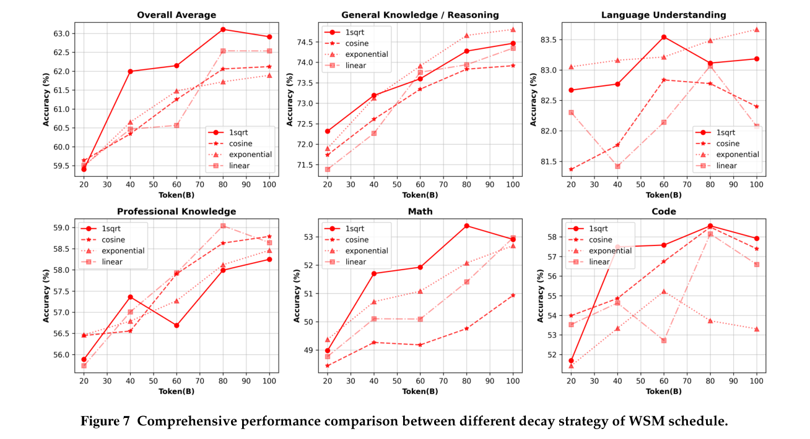
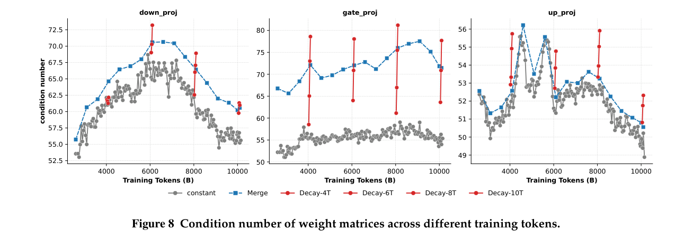
由 transformer 模块顺序连接组成的架构，已在主流 LLM 中广泛采用。在这类链式结构中，浅层输出的变化通常逐层传播。更稳定、更具泛化能力的输入—输出模式，具有更大潜力提升下游任务性能。为研究 checkpoint 合并如何影响网络行为，我们开展以下分析：
稳定性。在数值分析中，条件数衡量函数对输入扰动及由此产生输出误差的敏感性。图 8 的分析揭示，衰减过程引起条件数急剧恶化，而 checkpoint 合并表现出更好的稳定性。这说明，checkpoint 合并策略不仅提高性能，还保留了参数稳定性。
泛化能力。在保持有竞争力的性能时，更高 SVD 熵（奇异值熵）与更大的矩阵有效秩相关，表明矩阵运算具有更高信息容量。对于持续预训练和微调场景，更高 SVD 熵往往意味着模型可塑性有更大潜力（Alter et al., 2000; Roy and Vetterli, 2007; Liu et al., 2025）。图 9 显示训练期间 SVD 熵的变化趋势。我们观察到，衰减是快速降低熵的过程，会持续损害模型未来继续训练的潜力。相比之下，合并模型仍保持更高泛化能力，体现为更高的 SVD 熵。
我们提供详细评估结果，将我们的方法与 WSD 比较。图 10 针对第 4.2 节主要实验中的不同类别，逐数据集展示详细比较，WSM 在绝大多数数据集上取得优势。我们为每种方法——包括 WSD 和三种 WSM 合并算法——选取平均分最高的 checkpoint，列于表 7。表 8 和表 9 展示 WSM、WSD 调度生成的 checkpoint 在有监督微调（SFT）后的性能比较。
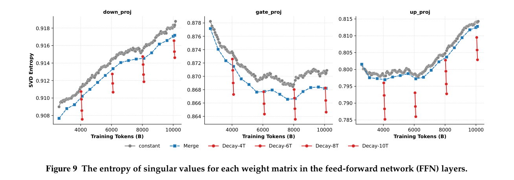
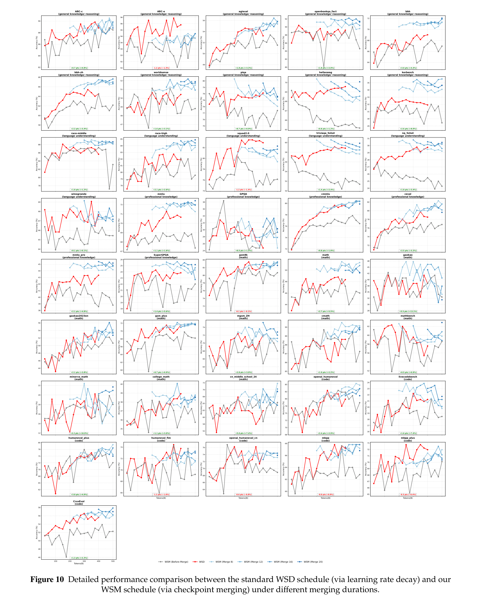
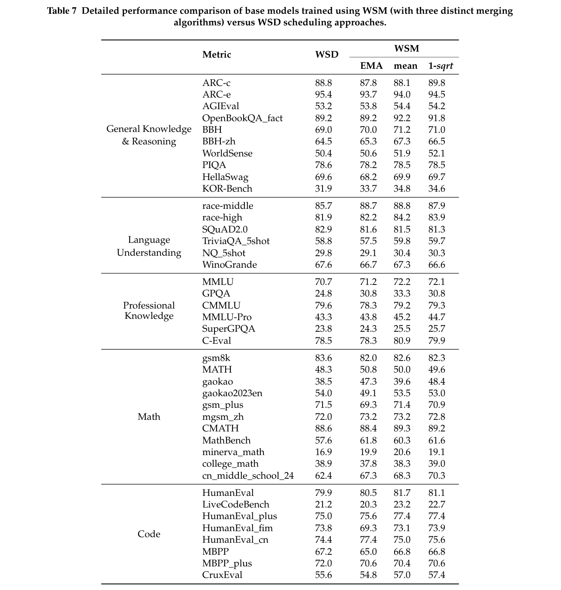
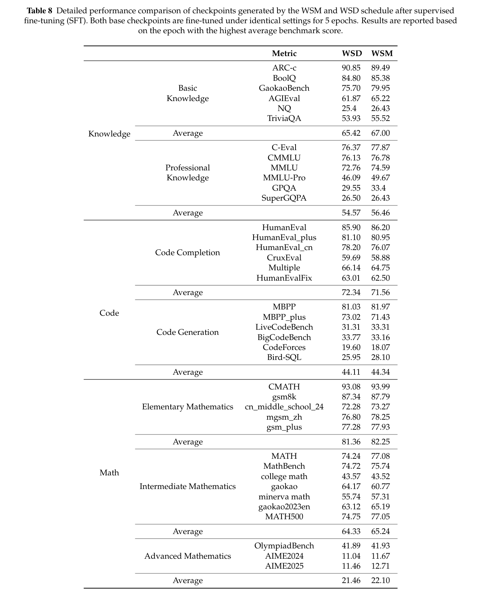
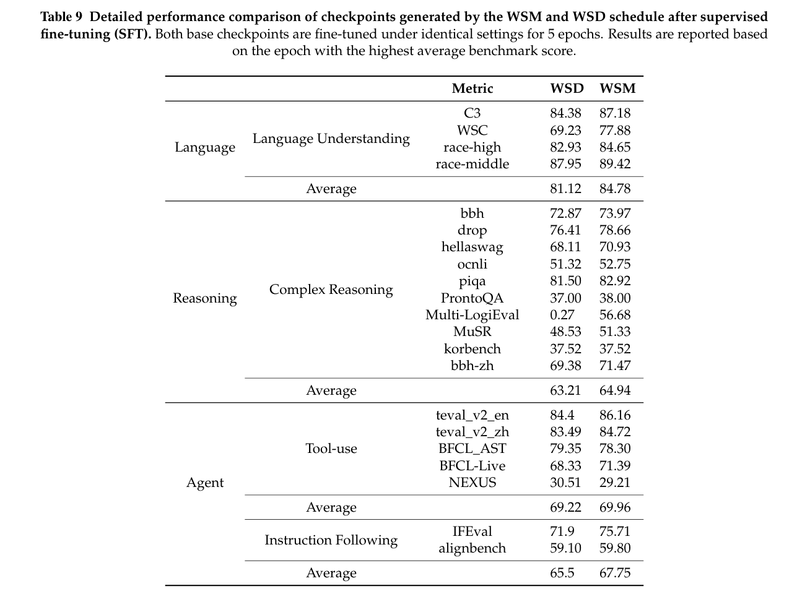